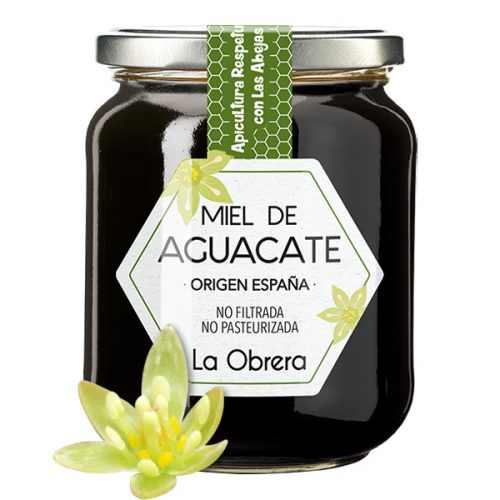
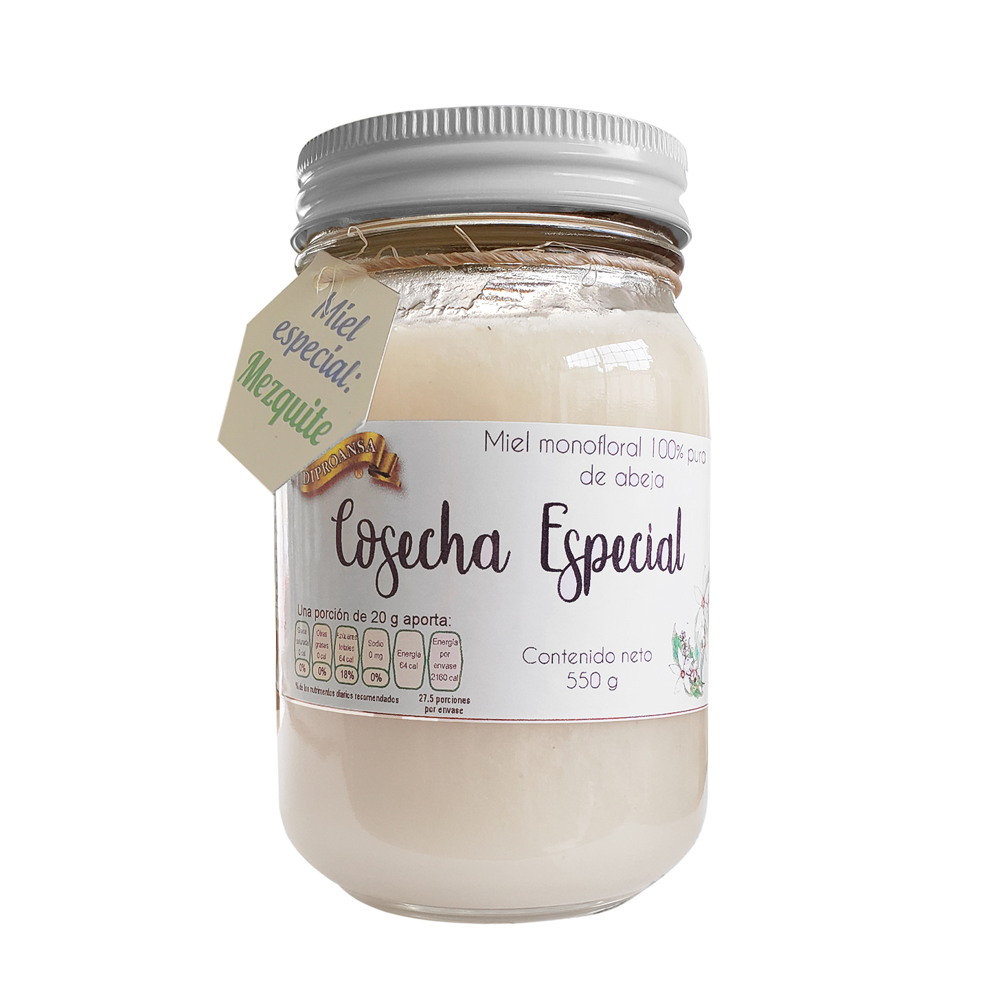
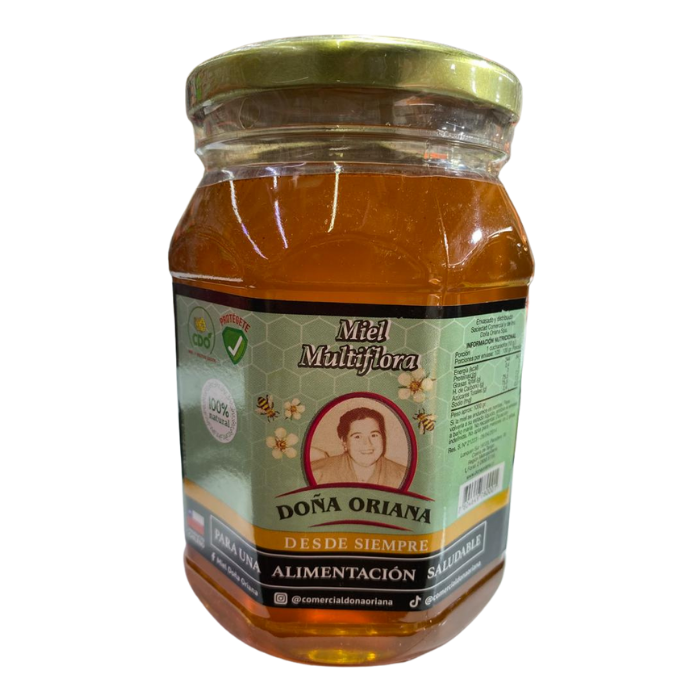
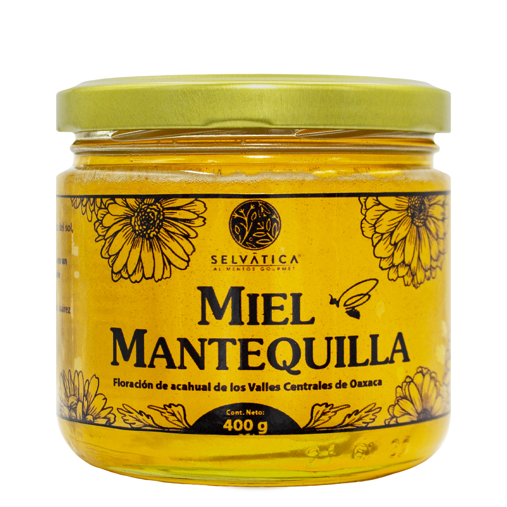
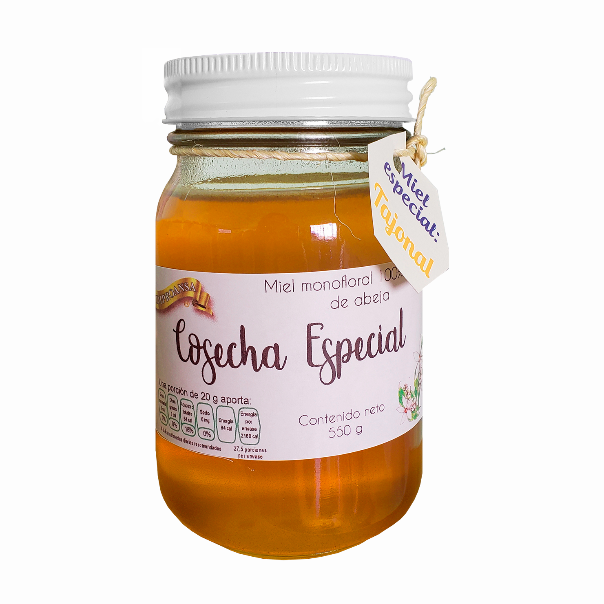
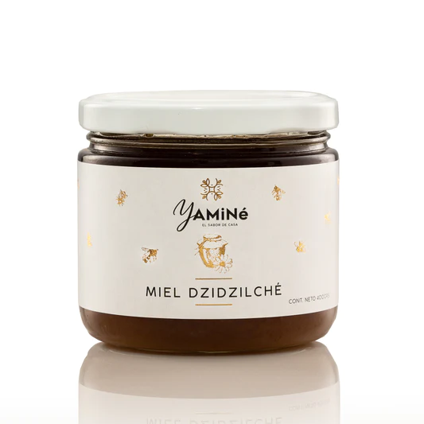

Bienvenidos a Honey
Somos Una Empresa de apicultura y aqui podras encontrar todo tipo de miel

Las Abejas
Nombradas “Los animales más importantes del mundo” por la Real Sociedad de Geografía de Londres y el Earthwatch Institute, las abejas juegan un papel vital en la polinización de más del 75% de los alimentos que consumimos a nivel mundial.
Los Apicultores
El apicultor, también conocido como colmenero, es la persona que se encarga de cuidar y mantener a la abeja doméstica con el fin de explotar sus diferentes beneficios como la polinización, producción de miel, polen, cera, propóleo, jalea real y veneno (apitoxina)
Nuestra Seleccion de Mieles
Miel De Aguacate
Este tipo de miel es de un tono café obscuro y de una densidad media. Su sabor es cítrico y floral, de dulzor moderado y una nota vegetal que la hace muy diferente a otro tipo de mieles.
$3.500Miel de Mezquite
Puede ser de color amarillo muy claro o casi blanca. Consistencia es similar a la mantequilla,su sabor es mucho más herbal y ácido. Ideal para comerse a cucharadas o para untar en galletas y pan.
$2.800Miel Multiflora
Las hay claras, obscuras, cremosas, delgadas, de sabor intenso, ligeramente saladas o con un toque ácido. Puede usarse para endulzar tus bebidas o postres, o para comerse sola.
$4.000Miel De Mantequilla
Esta miel es de color amarillo claro. Es envolvente en el paladar, dulce y aterciopelada. A simple vista se parece a la mantequilla. Es ideal para untar sobre panes más que para endulzar bebidas..
$5.500Miel de Tajonal
Es de tono más dorado y consistencia más líquida. Es dulce, con notas florales y frescas. Es perfecta para comerse sola o para usarse como vinagreta para algunas recetas de ensaladas.
$2.300Miel de Dzidzilché
El tsitsilché es un arbusto que cuando florece deja una estela de olor agradable. Se sugiere que la miel obtenida de este arbusto se consuma sola para detectar sus agradables sabores florales.
$7.890